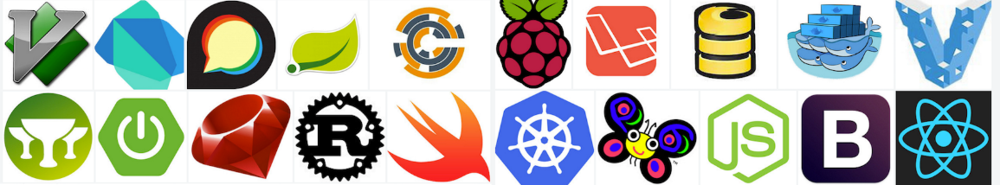
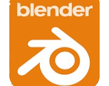
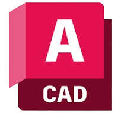

Back to List
Open Source: Platform For The People

What makes open source better than commercial source.
Oct 7, 2025 by Dylan Haas
Selecting the right software is one of the most important steps in building a digital project amd yet, many creators overlook a crucial distinction: the choice between open source and commercial software. Understanding how these two models differ, and what each offers, can determine not only your project’s cost but also its long-term sustainability.
While both open source and commercial options are widely available, open source software offers a level of freedom, transparency, and community support that commercial products rarely match. Understanding these advantages can help you make choices that not only save money but also give your project greater flexibility, security, and longevity.
What Is Open Source Software?
Click pictures to see examples

Open source software is created by individuals or communities who make their code freely available for anyone to use, modify, and distribute. Rather than restricting access or focusing on profit, open source projects prioritize collaboration and innovation. These tools are often designed to be broad and adaptable, capable of serving many purposes. When developers get involved, they can customize the code to improve performance, add new features, or tailor it to specific needs, and many choose to share their improvements publicly, strengthening the software for everyone.
- Pros
- Free or low-cost: Most open source tools are completely free to use, helping individuals and organizations cut down on software expenses.
- Full transparency and control: Since the source code is open to everyone, users can study, modify, and customize it to fit their exact needs.
- Community-driven innovation: A global community of developers and users continuously improves the software, adding features, fixing bugs, and enhancing security.
- Flexibility and longevity: Open source projects aren’t tied to a single company, meaning they can evolve and stay useful long after commercial products might be discontinued.
- Cons
- Limited official support: While communities are often helpful, professional customer support may be slower or harder to find compared to commercial options.
- Compatibility challenges: Some open source programs may not integrate as smoothly with certain proprietary systems or third-party software.
- Security and maintenance responsibility: Because users control updates and security measures, protecting the software often requires more technical knowledge.
- Steeper learning curve: Open source tools can be less user-friendly or require more setup than polished commercial alternatives.
What Is Commercial Source Software?
Click pictures to see examples

Commercial source software is software developed by a private group, company, or organization that is built for more specific purposes that requires a license to use. The main goal of these softwares is to generate money through the licensing, leading to a more refined and polished product. These softwares are closed off to everyone but the creators, so others can’t lay claim to it or edit it in any way, only professional developers are allowed to modify the source code, leading to more regular and progressive updates.
- Pros
- Has professional support services (like tech support or customer service)
- Compatible with other softwares and websites
- Has high levels of security to protect your data/their code
- Often designed to be easy to use/access
- Often has extensive documentation and user guides
- Cons
- Can cost a pretty penny (either one and done purchase or subscription)
- Very little customization (source code is protected and cannot be altered by a customer)
- Not always flexible to access (can be limited in how you access it)
- The software is handled by a company, so it may not always adhere to the customers but rather work against them
Why Should You Choose Open Source?
It is the cheaper option, allowing anyone not just to use it but to modify it as well to their personal needs. It gives you whole communities to work with to update or discover new softwares to use, giving you a world wide web (pun intended) of communications and knowledge to work with. Even if commercial source is more polished than open sorce, it doesn't have the overall acessibility and tightly woven communitites as open source users.
Why Others Choose Commercial Source
While it is the more expensive option, it comes with its perks. You get professional grade software to work with as you please, having any help along the way if you need it. You get software that was specifically designed for a certain purpose, making it more fine tuned to your goals.
Sources: